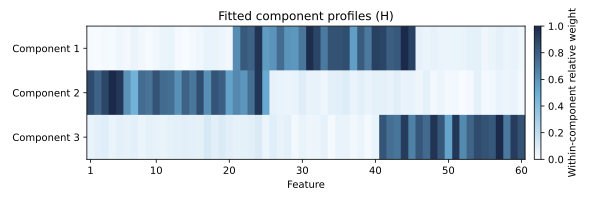
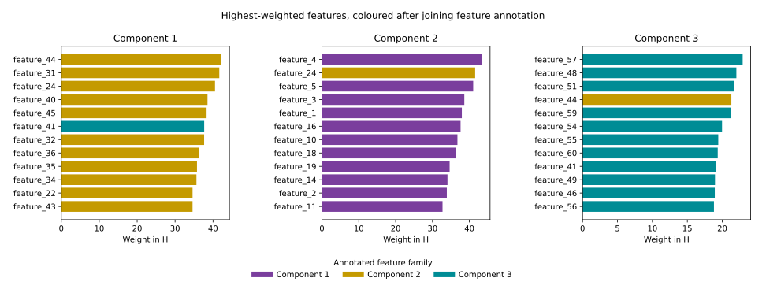
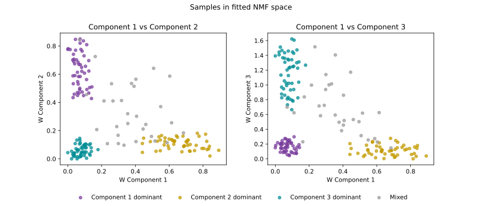
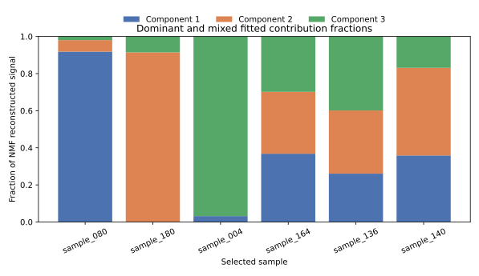
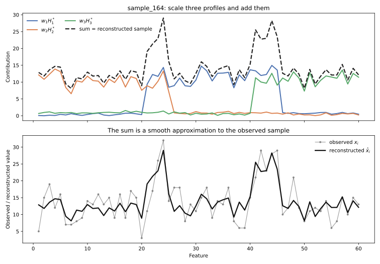
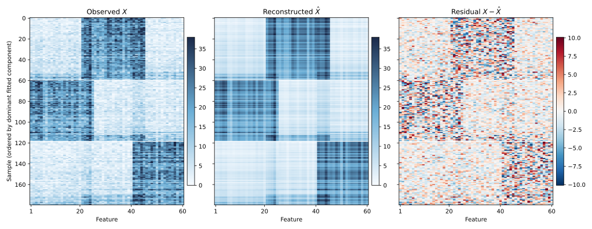
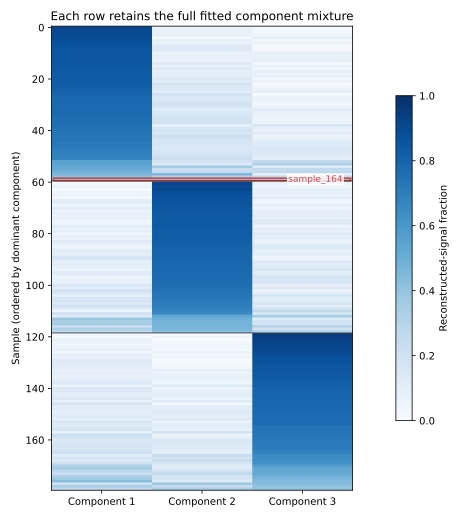
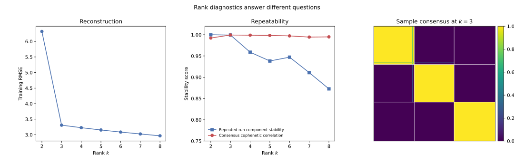

2 A practical NMF workflow
Suppose someone gives you a non-negative data matrix. What do you do with it?
This chapter follows the workflow we would use for a real analysis: check the matrix, fit one provisional NMF model, read its two fitted factors, reconstruct observations, inspect what the model missed, and only then consider other ranks. The dataset is simulated so that it has clear structure, but nothing in the analysis below depends on knowing how it was generated.
In R we use NNLM::nnmf() for the main fit and the NMF package for a consensus rank survey. In Python we use sklearn.decomposition.NMF. Both main fits use fast coordinate-descent solvers. The classical multiplicative updates belong in the mathematics chapter, not as a requirement for routine use.
2.1 Start with the observed matrix
Download these three files and keep them in a folder named data:
The observed matrix is stored with samples in rows and features in columns. Load it and verify that the metadata IDs are in the same order before attaching labels or colours to a plot.
X <- as.matrix(read.csv(
"data/X_simulated.csv", row.names = 1, check.names = FALSE
))
meta <- read.csv("data/sample_metadata.csv")
feature_meta <- read.csv("data/feature_metadata.csv")
dim(X)
range(X)
anyNA(X)
any(X < 0)
stopifnot(
identical(rownames(X), meta$sample_id),
identical(colnames(X), feature_meta$feature_id)
)[1] 180 60
[1] 0 53
[1] FALSE
[1] FALSEimport numpy as np
import pandas as pd
X_df = pd.read_csv("data/X_simulated.csv", index_col=0)
meta = pd.read_csv("data/sample_metadata.csv")
feature_meta = pd.read_csv("data/feature_metadata.csv")
X = X_df.to_numpy()
print(X.shape)
print(X.min(), X.max())
print(np.isnan(X).any())
print((X < 0).any())
assert X_df.index.tolist() == meta["sample_id"].tolist()
assert X_df.columns.tolist() == feature_meta["feature_id"].tolist()(180, 60)
0.0 53.0
False
FalseThese four checks answer different questions:
dim(X)orX.shapeconfirms the orientation and establishes \(n=180\) samples and \(p=60\) features.range(X)checks the observed scale and can expose impossible or miscoded values.anyNA(X)ornp.isnan(X).any()catches missing values. Most NMF implementations do not silently solve the missing-data problem, so missingness needs an explicit plan.any(X < 0)checks the defining input constraint. Ordinary NMF requires non-negative input. Centring this matrix would generally violate it.
2.2 Fit one provisional model
Begin with one model at provisional rank
\[ k=3. \]
This is not yet an argument that three is the correct rank. First we need to understand what a single fitted model gives us.
library(NNLM)
set.seed(1)
fit <- NNLM::nnmf(
X,
k = 3,
method = "scd",
loss = "mse",
max.iter = 2000,
rel.tol = 1e-8,
verbose = 0
)
W <- fit$W
H <- fit$H
dim(W)
dim(H)[1] 180 3
[1] 3 60from sklearn.decomposition import NMF
model = NMF(
n_components=3,
init="nndsvda",
solver="cd",
beta_loss="frobenius",
max_iter=2000,
tol=1e-6,
random_state=0,
)
W = model.fit_transform(X)
H = model.components_
print(W.shape)
print(H.shape)(180, 3)
(3, 60)The dimensions encode the two questions we will ask throughout the chapter:
\[ W\in\mathbb R_{\geq0}^{n\times k},\qquad H\in\mathbb R_{\geq0}^{k\times p}. \]
- H = what the components look like over the features.
- W = the component coefficients for the samples.
Component numbers are arbitrary labels, not an importance ranking. We keep the order returned by each solver and add names only to make tables and plots readable.
colnames(W) <- paste("Component", 1:3)
rownames(H) <- paste("Component", 1:3)component_names = ["Component 1", "Component 2", "Component 3"]The static figures below use the Python fit. Running the R path produces the same kind of analysis, although non-convex NMF fits need not return identical numbers or component order.
2.3 Part 1: Read \(H\) first
Each row of \(H\) is a fitted profile over the 60 features. A heatmap gives the quickest overview.
H_relative <- sweep(H, 1, apply(H, 1, max), "/")
image(
x = seq_len(ncol(H_relative)),
y = seq_len(nrow(H_relative)),
z = t(H_relative),
xlab = "Feature", ylab = "Component",
col = hcl.colors(40, "Blues 3", rev = TRUE)
)import matplotlib.pyplot as plt
H_relative = H / H.max(axis=1, keepdims=True)
fig, ax = plt.subplots(figsize=(8, 2.7))
image = ax.imshow(H_relative, aspect="auto", cmap="Blues",
vmin=0, vmax=1)
ax.set_xlabel("Feature")
ax.set_ylabel("Component")
ax.set_yticks(range(3), component_names)
fig.colorbar(image, ax=ax, label="Within-component relative weight")
The row-wise display scaling makes every profile visible and does not change any within-row ranking. It does mean that colour intensity should not be compared across components. The scale-aware cross-component comparison comes later.
The entry
\[ H_{rj} \]
is the fitted weight of feature \(j\) in component \(r\). A large value means that the feature contributes strongly to that component profile. The colour scale is useful for structure, but a ranked list is better for identifying exact features.
2.3.1 Rank the defining features
Start with Component 1, then repeat the same operation for every row of \(H\).
component_1 <- sort(H[1, ], decreasing = TRUE)
head(component_1, 12)feature_44 feature_31 feature_24 feature_40 feature_45 feature_41 feature_32
0.02033296 0.02003490 0.01948908 0.01854064 0.01844298 0.01814453 0.01811311
feature_36 feature_35 feature_34 feature_43 feature_22
0.01751294 0.01720727 0.01713666 0.01666278 0.01664310top_by_component <- lapply(1:3, function(r) {
sort(H[r, ], decreasing = TRUE)[1:12]
})
old_par <- par(mfrow = c(1, 3), mar = c(4, 7, 2, 1))
for (r in 1:3) {
top <- rev(top_by_component[[r]])
barplot(
top, horiz = TRUE, las = 1,
main = paste("Component", r), xlab = "Weight in H"
)
}
par(old_par)component_1 = pd.Series(H[0], index=X_df.columns)
print(component_1.sort_values(ascending=False).head(12))feature_44 42.216516
feature_31 41.654514
feature_24 40.521195
feature_40 38.546488
feature_45 38.303736
feature_41 37.672746
feature_32 37.658315
feature_36 36.409935
feature_35 35.774613
feature_34 35.631275
feature_22 34.603957
feature_43 34.600021
dtype: float64fig, axes = plt.subplots(1, 3, figsize=(13, 5))
for r, ax in enumerate(axes):
top = pd.Series(H[r], index=X_df.columns).nlargest(12)
top.sort_values().plot.barh(ax=ax)
ax.set_title(f"Component {r + 1}")
ax.set_xlabel("Weight in H")Notice that R’s weights sit around 0.02 while Python’s sit around 40. Neither number is wrong. The two solvers landed on different scalings of the same underlying factorization, and Part 3 explains exactly why that is allowed to happen.
At this point we have used only the fitted weights. Now join the feature annotations and ask whether the high-weight features form a coherent known group.
for (r in 1:3) {
feature_ids <- names(top_by_component[[r]])
annotation <- feature_meta$primary_component[
match(feature_ids, feature_meta$feature_id)
]
cat("Component", r, "\n")
print(table(annotation))
}Component 1
annotation
Component 2 Component 3
11 1
Component 2
annotation
Component 1 Component 2
11 1
Component 3
annotation
Component 2 Component 3
1 11annotation = feature_meta.set_index("feature_id")["primary_component"]
for r in range(3):
top_ids = pd.Series(H[r], index=X_df.columns).nlargest(12).index
print(f"Component {r + 1}")
print(annotation.loc[top_ids].value_counts())Component 1
primary_component
Component 2 11
Component 3 1
Name: count, dtype: int64
Component 2
primary_component
Component 1 11
Component 2 1
Name: count, dtype: int64
Component 3
primary_component
Component 3 11
Component 2 1
Name: count, dtype: int64
Here the annotations have generic names because this is a simulated dataset. In a biological analysis they might be cell-type markers, pathway membership, or functional categories. The logic is the same: NMF supplies a weighted feature profile, and the analyst gives that profile a tentative interpretation from its high-weight features. NMF does not itself label a component “immune”, “proliferation”, or “metabolic”.
2.3.2 Magnitude is not the same as specificity
Suppose two features have these weights across three components:
| Feature | Component 1 | Component 2 | Component 3 |
|---|---|---|---|
| A | 0.90 | 0.05 | 0.02 |
| B | 0.90 | 0.85 | 0.80 |
Feature A is both large and specific to Component 1. Feature B is large in Component 1 but nearly as large everywhere, so it does less to distinguish that component.
There is one important catch: comparing a fitted feature across rows of \(H\) is itself affected by NMF’s scaling ambiguity. Top-feature ranking within one row is safe because multiplying the entire row by a positive constant does not change its order. We will compute fitted feature specificity only after putting all component profiles on a common scale in Section 2.5.
If explicit sparsity or feature selection is the goal, use a sparse-NMF formulation or another feature-selection method. Ordinary NMF weights need not contain exact zeros.
2.4 Part 2: Read \(W\)
Now turn to the sample coefficients. Naming the rows and columns makes their orientation explicit.
rownames(W) <- rownames(X)
colnames(W) <- paste("Component", 1:3)
round(head(W), 3) Component 1 Component 2 Component 3
sample_001 195.568 274.575 1130.722
sample_002 239.065 325.294 1732.391
sample_003 1749.800 60.560 214.945
sample_004 59.314 50.236 1707.171
sample_005 120.107 1651.563 338.488
sample_006 232.709 1514.998 365.896W_df = pd.DataFrame(
W,
index=X_df.index,
columns=component_names,
)
print(W_df.head().round(3)) Component 1 Component 2 Component 3
sample_id
sample_001 0.090 0.090 0.932
sample_002 0.109 0.103 1.427
sample_003 0.841 0.020 0.179
sample_004 0.022 0.000 1.407
sample_005 0.057 0.613 0.274Conceptually, the first rows look like this:
\[ W= \begin{array}{c|ccc} &C1&C2&C3\\ \hline \text{sample\_001}&\cdots&\cdots&\cdots\\ \text{sample\_002}&\cdots&\cdots&\cdots\\ \text{sample\_003}&\cdots&\cdots&\cdots \end{array}. \]
Every row is one sample in a three-dimensional NMF space. Within a single column, a higher coefficient means that the corresponding profile in \(H\) is used more strongly for that sample.
2.4.1 Plot samples in component space
The sample metadata can now be used to colour a score plot.
group_colours <- c(
"Component 1 dominant" = "#7A3E9D",
"Component 2 dominant" = "#C49A00",
"Component 3 dominant" = "#008C95",
"Mixed" = "#999999"
)
point_colours <- group_colours[meta$group]
old_par <- par(mfrow = c(1, 2))
plot(W[, 1], W[, 2], col = point_colours, pch = 19,
xlab = "W Component 1", ylab = "W Component 2")
legend("topright", legend = names(group_colours), col = group_colours,
pch = 19, bty = "n", cex = 0.7)
plot(W[, 1], W[, 3], col = point_colours, pch = 19,
xlab = "W Component 1", ylab = "W Component 3")
par(old_par)group_colours = {
"Component 1 dominant": "#7A3E9D",
"Component 2 dominant": "#C49A00",
"Component 3 dominant": "#008C95",
"Mixed": "#999999",
}
fig, axes = plt.subplots(1, 2, figsize=(11, 4.5))
for ax, (x_col, y_col) in zip(axes, [(0, 1), (0, 2)]):
for group, colour in group_colours.items():
keep = meta["group"].eq(group).to_numpy()
ax.scatter(W[keep, x_col], W[keep, y_col],
color=colour, alpha=0.7, label=group)
ax.set_xlabel(f"W Component {x_col + 1}")
ax.set_ylabel(f"W Component {y_col + 1}")
axes[0].legend(frameon=False, fontsize=8)
Separation along \(W_1\) means that samples differ in the coefficient multiplying row 1 of \(H\). If inspection of that row suggested an immune-related profile, then separation along \(W_1\) would mean differing fitted strength of that profile. It would not mean that Component 1 is the “most important” component.
The two panels also prevent a common mistake. A sample near zero in the \(W_1\)-versus-\(W_2\) plot may have a large \(W_3\). A two-dimensional view reports only the components on its axes.
It is meaningful to compare samples within one column of \(W\). Comparing the three numbers within one sample, however, requires one more step.
2.5 Part 3: Put components on a comparable scale
NMF has a scaling ambiguity. For any positive diagonal matrix \(D\),
\[ WH=(WD)(D^{-1}H). \]
The same reconstruction can therefore have a large column of \(W\) paired with a small row of \(H\), or the reverse. A raw calculation such as “divide one row of \(W\) by its sum and call the result percentages” is not invariant to this rescaling.
For interpretation, give every row of \(H\) unit L1 norm. Define
\[ s_r=\sum_j H_{rj}, \]
then set
\[ H^*_{r\cdot}=\frac{H_{r\cdot}}{s_r}, \qquad W^*_{\cdot r}=s_rW_{\cdot r}. \]
component_scale <- rowSums(H)
stopifnot(all(component_scale > 0))
H_star <- sweep(H, 1, component_scale, "/")
W_star <- sweep(W, 2, component_scale, "*")
rowSums(H_star)Component 1 Component 2 Component 3
1 1 1stopifnot(isTRUE(all.equal(
W %*% H,
W_star %*% H_star,
tolerance = 1e-10
)))
reconstructed_total <- rowSums(W_star)
stopifnot(all(reconstructed_total > 0))
fractions <- W_star / reconstructed_totalcomponent_scale = H.sum(axis=1)
if np.any(component_scale <= 0):
raise ValueError("The fit contains an empty component")
H_star = H / component_scale[:, None]
W_star = W * component_scale[None, :]
print(H_star.sum(axis=1))[1. 1. 1.]assert np.allclose(W @ H, W_star @ H_star)
reconstructed_total = W_star.sum(axis=1, keepdims=True)
if np.any(reconstructed_total <= 0):
raise ValueError("At least one sample has zero reconstructed signal")
fractions = W_star / reconstructed_totalThis changes the representation but not the reconstruction:
\[ W^*H^*=WH. \]
Because every row of \(H^*\) sums to 1,
\[ \sum_j W^*_{ir}H^*_{rj}=W^*_{ir}. \]
Thus \(W^*_{ir}\) is the total reconstructed mass contributed by component \(r\) to sample \(i\), under this normalization. We can now calculate
\[ q_{ir}=\frac{W^*_{ir}}{\sum_s W^*_{is}} \]
and interpret \(q_{ir}\) as the fraction of that sample’s NMF reconstructed signal under this normalization associated with component \(r\). These are not necessarily literal biological mixture percentages.
For the fitted model used in the figures, sample_164 is deliberately informative:
| Sample | Component 1 | Component 2 | Component 3 |
|---|---|---|---|
sample_164 |
0.368 | 0.334 | 0.298 |
No component is negligible. A single hard label would discard most of this row.
2.5.1 Compare a few fitted mixtures
Choose examples from the fitted fractions rather than from hidden knowledge about the data.
selected_ids <- c(
"sample_080", "sample_180", "sample_004",
"sample_164", "sample_136", "sample_140"
)
selected <- fractions[selected_ids, , drop = FALSE]
round(selected, 3) Component 1 Component 2 Component 3
sample_080 0.920 0.063 0.018
sample_180 0.000 0.914 0.086
sample_004 0.040 0.027 0.933
sample_164 0.371 0.341 0.288
sample_136 0.264 0.351 0.385
sample_140 0.360 0.476 0.164barplot(
t(selected), beside = FALSE,
col = c("#4C72B0", "#DD8452", "#55A868"),
ylim = c(0, 1), las = 2,
ylab = "Fraction of NMF reconstructed signal"
)
legend("topright", legend = colnames(W),
fill = c("#4C72B0", "#DD8452", "#55A868"), bty = "n")selected_ids = [
"sample_080", "sample_180", "sample_004",
"sample_164", "sample_136", "sample_140",
]
selected_idx = [X_df.index.get_loc(sample_id) for sample_id in selected_ids]
selected = pd.DataFrame(
fractions[selected_idx],
index=selected_ids,
columns=component_names,
)
print(selected.round(3)) Component 1 Component 2 Component 3
sample_080 0.918 0.062 0.019
sample_180 0.000 0.915 0.085
sample_004 0.032 0.000 0.968
sample_164 0.368 0.334 0.298
sample_136 0.261 0.341 0.399
sample_140 0.358 0.472 0.169selected.plot.bar(stacked=True, ylim=(0, 1),
ylabel="Fraction of NMF reconstructed signal")
2.5.2 Return to feature specificity
Now that the rows of \(H^*\) share an L1 scale, feature weights can be compared across components. One useful descriptive quantity is a feature’s share across components:
\[ \operatorname{specificity}_{rj} =\frac{H^*_{rj}}{\sum_s H^*_{sj}}. \]
inspect_feature <- function(feature_id) {
magnitude <- H_star[, feature_id]
data.frame(
component = rownames(H_star),
magnitude = magnitude,
specificity = magnitude / sum(magnitude)
)
}
inspect_feature("feature_31") component magnitude specificity
Component 1 Component 1 0.047525399 0.91711416
Component 2 Component 2 0.002909466 0.05614497
Component 3 Component 3 0.001385728 0.02674087inspect_feature("feature_24") component magnitude specificity
Component 1 Component 1 0.046230645 0.47349493
Component 2 Component 2 0.047410101 0.48557494
Component 3 Component 3 0.003996297 0.04093013def inspect_feature(feature_id):
j = X_df.columns.get_loc(feature_id)
magnitude = H_star[:, j]
return pd.DataFrame({
"component": component_names,
"magnitude": magnitude,
"specificity": magnitude / magnitude.sum(),
})
print(inspect_feature("feature_31")) component magnitude specificity
0 Component 1 0.047581 0.909858
1 Component 2 0.002873 0.054941
2 Component 3 0.001841 0.035201print(inspect_feature("feature_24")) component magnitude specificity
0 Component 1 0.046286 0.467030
1 Component 2 0.047257 0.476825
2 Component 3 0.005564 0.056144feature_31 has nearly all its normalized weight in fitted Component 1, whereas feature_24 has similar normalized weight in Components 1 and 2. The latter is large in both profiles but is not specific to either one. Magnitude and specificity answer different questions.
2.6 Part 4: Reconstruct one sample by hand
This is the factorization made concrete. Pick the mixed sample_164. If its scale-adjusted coefficient row is
\[ W^*_{i\cdot}=[w_1,w_2,w_3], \]
then its reconstruction is
\[ \hat x_i =w_1H^*_{1\cdot} +w_2H^*_{2\cdot} +w_3H^*_{3\cdot}. \]
i <- match("sample_164", rownames(X))
contributions <- sweep(H_star, 1, W_star[i, ], "*")
x_hat_i <- colSums(contributions)
stopifnot(isTRUE(all.equal(
as.numeric(x_hat_i),
as.numeric(W_star[i, ] %*% H_star)
)))
old_par <- par(mfrow = c(2, 1))
matplot(t(contributions), type = "l", lty = 1,
col = c("#4C72B0", "#DD8452", "#55A868"),
xlab = "Feature", ylab = "Component contribution")
lines(x_hat_i, lwd = 2, lty = 2)
plot(X[i, ], type = "o", pch = 16, cex = 0.5, col = "grey50",
xlab = "Feature", ylab = "Value")
lines(x_hat_i, lwd = 2)
par(old_par)i = X_df.index.get_loc("sample_164")
contributions = W_star[i, :, None] * H_star
x_hat_i = contributions.sum(axis=0)
assert np.allclose(x_hat_i, W_star[i] @ H_star)
fig, axes = plt.subplots(2, 1, sharex=True)
for r in range(3):
axes[0].plot(contributions[r], label=f"Component {r + 1}")
axes[0].plot(x_hat_i, "k--", label="sum")
axes[0].legend()
axes[1].plot(X[i], "o-", color="0.5", label="observed")
axes[1].plot(x_hat_i, "k-", label="reconstructed")
axes[1].legend()
axes[1].set_xlabel("Feature")
Read Figure 2.5 from top to bottom:
- Each row of \(H^*\) is a feature pattern.
- The three entries in the sample’s row of \(W^*\) scale those patterns.
- The scaled patterns are added feature by feature.
- Their sum is \(\hat x_i\), the model’s approximation to the observed \(x_i\).
The model does not choose one component for this sample. It reconstructs the sample additively from all three.
2.7 Part 5: Reconstruct the whole dataset
The same operation applies to every row at once:
\[ \hat X=W^*H^*=WH. \]
X_hat <- W_star %*% H_star
residual <- X - X_hat
rmse <- sqrt(mean(residual^2))
stopifnot(isTRUE(all.equal(rowSums(X_hat), rowSums(W_star))))
dominant_for_order <- max.col(fractions)
sample_order <- order(
dominant_for_order,
-apply(fractions, 1, max)
)
value_limit <- unname(quantile(X, 0.99))
residual_limit <- unname(quantile(abs(residual), 0.99))
draw_heatmap <- function(matrix, colours, limits, title) {
ordered <- matrix[sample_order, , drop = FALSE]
image(
x = seq_len(ncol(ordered)),
y = seq_len(nrow(ordered)),
z = t(ordered[nrow(ordered):1, , drop = FALSE]),
col = colours, zlim = limits,
axes = FALSE, xlab = "Feature", ylab = "Sample",
main = title
)
}
old_par <- par(mfrow = c(1, 3), mar = c(3, 3, 2, 1))
draw_heatmap(X, hcl.colors(50, "Blues 3", rev = TRUE),
c(0, value_limit), "Observed X")
draw_heatmap(X_hat, hcl.colors(50, "Blues 3", rev = TRUE),
c(0, value_limit), "Reconstructed X-hat")
draw_heatmap(residual, hcl.colors(51, "Blue-Red 3"),
c(-residual_limit, residual_limit), "Residual")
par(old_par)
dim(X_hat)
dim(residual)
round(rmse, 2)[1] 180 60
[1] 180 60
[1] 3.31X_hat = W_star @ H_star
residual = X - X_hat
rmse = np.sqrt(np.mean(residual ** 2))
assert np.allclose(X_hat.sum(axis=1), W_star.sum(axis=1))
dominant_for_order = fractions.argmax(axis=1)
sample_order = np.lexsort(
(-fractions.max(axis=1), dominant_for_order)
)
value_limit = np.quantile(X, 0.99)
residual_limit = np.quantile(np.abs(residual), 0.99)
fig, axes = plt.subplots(1, 3, figsize=(14, 5), sharey=True)
axes[0].imshow(X[sample_order], aspect="auto", cmap="Blues",
vmin=0, vmax=value_limit)
axes[0].set_title("Observed X")
axes[1].imshow(X_hat[sample_order], aspect="auto", cmap="Blues",
vmin=0, vmax=value_limit)
axes[1].set_title("Reconstructed X-hat")
axes[2].imshow(residual[sample_order], aspect="auto", cmap="RdBu_r",
vmin=-residual_limit, vmax=residual_limit)
axes[2].set_title("Residual")
for ax in axes:
ax.set_xlabel("Feature")
axes[0].set_ylabel("Sample")
print(X_hat.shape)
print(residual.shape)
print(round(rmse, 2))(180, 60)
(180, 60)
3.31For the heatmaps, samples are ordered by their fitted dominant contribution and then by the strength of that contribution. The same row order and colour limits are used for \(X\) and \(\hat X\), so visual differences are meaningful.

The reconstruction retains the dominant blocks but smooths small sample-to-sample fluctuations. That is what a useful low-rank representation should do. Residuals need not be tiny everywhere. The more important question is whether they retain systematic structure. A clear block, gradient, or subgroup in \(X-\hat X\) would suggest that the provisional rank is too small or that an additive non-negative representation is a poor description of the data.
RMSE summarizes overall residual size in the original measurement units. It is useful for comparing candidate fits on the same matrix, but it does not reveal where a model fails, so keep the residual plot.
2.8 Part 6: Use \(W\) for sample structure
The rows of \(W\) are a low-dimensional representation of the samples. The scatter plots in Figure 2.3 show two coordinates at a time. A sample-by-component heatmap shows the complete fitted mixture for every sample.
For within-sample display, use the scale-aware fractions \(q_{ir}\). A convenient summary label is
\[ d_i=\operatorname*{argmax}_r q_{ir}. \]
dominant <- max.col(fractions)
sample_order <- order(dominant, -apply(fractions, 1, max))
ordered_fractions <- fractions[sample_order, , drop = FALSE]
image(
x = 1:3,
y = seq_len(nrow(ordered_fractions)),
z = t(ordered_fractions[nrow(ordered_fractions):1, , drop = FALSE]),
xaxt = "n", yaxt = "n",
xlab = "", ylab = "Sample",
col = hcl.colors(40, "Blues 3", rev = TRUE)
)
axis(1, at = 1:3, labels = colnames(fractions))dominant = fractions.argmax(axis=1)
sample_order = np.lexsort((-fractions.max(axis=1), dominant))
fig, ax = plt.subplots(figsize=(5, 7))
ax.imshow(fractions[sample_order], aspect="auto", cmap="Blues",
vmin=0, vmax=1)
ax.set_xticks(range(3), component_names)
ax.set_ylabel("Sample")
The argmax label is useful for ordering a heatmap or making a quick summary. It is not the NMF model. The complete row of \(W^*\), or its normalized fraction row, contains richer information. In Figure 2.7, forcing sample_164 into one cluster would hide two other contributions that are almost as large as the winning one.
Rows of \(W^*\) can also be clustered when the research question calls for groups. That is a downstream analysis of the NMF representation, not something NMF automatically guarantees.
2.9 Part 7: Connect sample structure back to features
The two factors become most useful when read together:
- Fit NMF and inspect sample structure in \(W\).
- Identify a component associated with an interesting separation or gradient.
- Inspect the corresponding row of \(H\).
- Rank its feature weights.
- Look up annotations, pathways, or domain knowledge for those features.
For example, Figure 2.3 shows that the samples carrying the Component 2 dominant metadata label extend mainly along fitted \(W_1\). Returning to row 1 of \(H\), its largest weights are concentrated in features annotated as the second feature family. That coherence offers a possible interpretation of the observed sample separation.
It does not establish causality. Nor should a component be declared a biological pathway merely because several high-weight genes share an annotation. The fitted profile is a statistical pattern whose scientific meaning still requires validation.
2.10 Part 8: Choose \(k\)
We used \(k=3\) provisionally. Now fit a small range of ranks and ask several distinct questions.
2.10.1 Reconstruction error
ks <- 2:8
set.seed(1)
rmse_by_k <- sapply(ks, function(k) {
rank_fit <- NNLM::nnmf(
X, k = k, method = "scd", loss = "mse",
max.iter = 1000, rel.tol = 1e-6, verbose = 0
)
sqrt(mean((X - rank_fit$W %*% rank_fit$H)^2))
})
names(rmse_by_k) <- ks
rmse_by_k 2 3 4 5 6 7 8
6.320213 3.308442 3.226778 3.152743 3.085591 3.022554 2.962668rmse_by_k = {}
for k in range(2, 9):
rank_model = NMF(
n_components=k, init="nndsvda", solver="cd",
beta_loss="frobenius", max_iter=3000,
tol=1e-5, random_state=0,
)
W_k = rank_model.fit_transform(X)
X_hat_k = W_k @ rank_model.components_
rmse_by_k[k] = np.sqrt(np.mean((X - X_hat_k) ** 2))
print(rmse_by_k){2: 6.32021118087057, 3: 3.3084356150265952, 4: 3.2267774866079093, 5: 3.1534148643151463, 6: 3.086101401367065, 7: 3.024959524130287, 8: 2.965557539793973}Training error generally falls as rank increases: a more flexible factorization can reproduce more detail. More precisely, the best achievable training error cannot increase when \(k\) grows, although a particular non-convex optimization run can miss that best solution. Therefore the minimum training RMSE is not, by itself, a rule for selecting rank. Look for diminishing returns, then ask whether the added components are stable and interpretable.
2.10.2 Repeated-run stability
NMF is sensitive to its starting point. A practical stability question is:
If I refit at the same rank from different initializations, do I recover approximately the same component profiles?
The helpers below perform repeated random starts, put the profiles on the same L1 scale, and use a one-to-one assignment internally before averaging component correlations. The matching machinery is only bookkeeping, so the implementation is collapsed by default.
all_permutations <- function(values) {
if (length(values) == 1L) return(matrix(values, nrow = 1))
do.call(rbind, lapply(seq_along(values), function(i) {
cbind(values[i], all_permutations(values[-i]))
}))
}
best_match_score <- function(H_left, H_right, permutations) {
k <- nrow(H_left)
correlations <- cor(t(H_left), t(H_right))
matched <- vapply(seq_len(k), function(r) {
correlations[r, permutations[, r]]
}, numeric(nrow(permutations)))
max(rowMeans(matched))
}
stability_score <- function(X, k, n_runs = 15, seed0 = 100) {
profiles <- vector("list", n_runs)
for (run in seq_len(n_runs)) {
set.seed(seed0 + run - 1)
repeat_fit <- NNLM::nnmf(
X, k = k, method = "scd", loss = "mse",
max.iter = 2000, rel.tol = 1e-4, verbose = 0
)
if (repeat_fit$n.iteration >= 2000) {
stop("A repeated fit did not converge")
}
profiles[[run]] <- sweep(
repeat_fit$H, 1, rowSums(repeat_fit$H), "/"
)
}
permutations <- all_permutations(seq_len(k))
pairs <- combn(n_runs, 2)
scores <- apply(pairs, 2, function(pair) {
best_match_score(
profiles[[pair[1]]], profiles[[pair[2]]], permutations
)
})
mean(scores)
}
stability <- sapply(2:8, function(k) stability_score(X, k))
names(stability) <- 2:8
round(stability, 4) 2 3 4 5 6 7 8
0.9997 0.9977 0.8211 0.8092 0.7912 0.8088 0.7478from itertools import combinations
from scipy.optimize import linear_sum_assignment
def stability_score(X, k, n_runs=15, seed0=100):
profiles = []
for run in range(n_runs):
repeat_model = NMF(
n_components=k, init="random", solver="cd",
beta_loss="frobenius", max_iter=5000,
tol=1e-4, random_state=seed0 + run,
)
repeat_model.fit(X)
if repeat_model.n_iter_ >= repeat_model.max_iter:
raise RuntimeError(f"Rank-{k} repeat did not converge")
H_run = repeat_model.components_
profiles.append(H_run / H_run.sum(axis=1, keepdims=True))
scores = []
for H_left, H_right in combinations(profiles, 2):
correlations = np.corrcoef(H_left, H_right)[:k, k:]
rows, columns = linear_sum_assignment(-correlations)
scores.append(correlations[rows, columns].mean())
return np.mean(scores)
stability = {k: stability_score(X, k) for k in range(2, 9)}
print({k: round(v, 4) for k, v in stability.items()}){2: 1.0, 3: 0.9992, 4: 0.9589, 5: 0.9383, 6: 0.9473, 7: 0.9109, 8: 0.8727}A high value means that repeated starts produce similar profiles.
2.10.3 Consensus NMF and cophenetic correlation
Consensus NMF is an established alternative, especially in molecular subtype discovery. Across repeated fits, its consensus matrix records how often each pair of samples receives the same dominant-component label. Cophenetic correlation summarizes how clearly that matrix supports a stable grouping.
NMF::nmf() clusters columns
The R NMF package factors the matrix in the orientation supplied, and its consensus workflow concerns the columns. Our samples are rows, so use t(X) when the goal is sample consensus clustering:
dim(t(X)) # 60 features x 180 samplesThe resulting consensus matrix should be \(180\times180\). This transpose is specific to this package workflow. It is not needed for the earlier NNLM::nnmf(X, ...) or Python fit.
library(NMF)
survey <- NMF::nmf(
t(X),
rank = 2:8,
nrun = 15,
method = "brunet",
seed = 123
)
consensus_k3 <- NMF::consensus(survey$fit[["3"]])
cophenetic <- sapply(survey$fit, NMF::cophcor)
dim(consensus_k3)
round(cophenetic, 4)[1] 180 180
2 3 4 5 6 7 8
0.9923 0.9994 0.9989 0.9985 0.9973 0.9945 0.9950
Figure 2.8 does not reduce rank choice to one magic number. Each panel answers a different question, and in this dataset they do not all point the same way.
Reconstruction is the RMSE curve from Section 9. It answers how much signal a given rank can represent, and it fell at every rank tried, from 6.320 at \(k=2\) down to 2.963 at \(k=8\) in the R run. A higher rank can only fit the training data at least as well as a lower one, so this curve has no reason to turn back up. Read on its own it would always favor the largest rank tried. It answers whether \(k\) is big enough to explain the data, not whether \(k\) is the right size.
Repeated-run stability answers a different question: if the fit were redone from a new random start, would it find the same components again? NMF’s alternating updates are not guaranteed to reach the same solution twice, so two honest fits at the same rank can disagree. Section 10 restarted the fit 15 times at each rank and scored, for every pair of restarts, how closely their component profiles agree after matching components across runs by correlation (matching is needed because, as Section 10 explained, a component’s column position is arbitrary and can differ from run to run). A score near 1 means every restart rediscovers essentially the same components, and a lower score means the components a single fit reports depend partly on where that fit happened to start. Both language’s stability curves stay above 0.99 through \(k=3\) and then drop, R falling to 0.821 at \(k=4\) and Python to 0.959. Past \(k=3\), a single fit’s components are less safe to treat as the definitive answer.
Consensus and cophenetic correlation ask a related question about samples rather than components: across repeated fits, does each sample keep the same dominant-component label? The consensus matrix from Section 11 records, for every pair of samples, how often the two were grouped together across 15 runs. Cophenetic correlation reduces that matrix to one number describing how cleanly it splits into blocks, close to 1 when sample grouping is essentially unanimous across runs and lower when samples switch sides depending on the run. Here cophenetic correlation peaks at \(k=3\) (0.9994) and stays a little lower at every other rank tried, in agreement with the stability curves above.
Interpretation is the check already used in Parts 1 and 3: do a rank’s top features form a coherent, mostly single-family group, the way feature_44, feature_31, and the rest of Component 1’s top list did earlier in this chapter? Raising \(k\) can start splitting one coherent signal into fragments, or merging two real signals into one, and neither reconstruction nor stability catches that on its own.
In this dataset the evidence converges. Reconstruction keeps improving and cannot select \(k\) by itself, but stability and cophenetic correlation, computed independently from two different procedures, both favor \(k=3\), matching the three interpretable components read out from \(H\) back in Part 1. That agreement across independent diagnostics, not any single number, is what makes \(k=3\) defensible here. No single diagnostic determines the correct rank for every dataset.